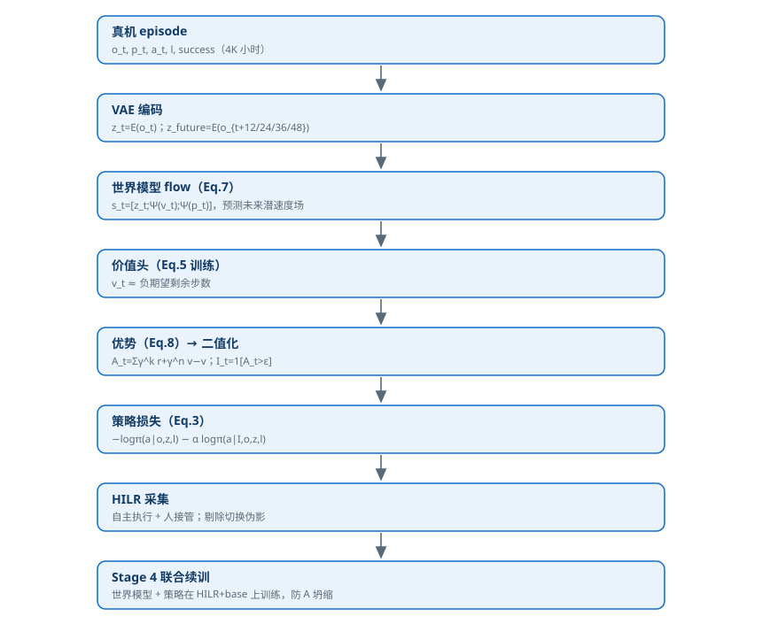

世界模型（Wan2.2 flow）+ 价值头 + n 步 TD 优势 → 二值化 I → 两项 NLL；HILR 采集与联合续训
RAMP = Reinforcement leArning via world Model-conditioned Policy：把 KL 正则 RL 的闭式解改写成「无条件模仿 + 优势条件化模仿」两项 NLL，用世界模型价值提供基线，从而离线可用、无需 critic。
| 项 | 值 |
|---|---|
| 骨干 | Wan2.2 视频 DiT + flow matching；策略 π_θ 为预训练 VLA |
| 数据 | 4K 小时真机操作数据；>10K 小时 VLA 预训练 |
| 关键超参 | 掩码率 p=0.2；β/γ/n/ε/α/C_fail 论文未给 |
| 结果 | 较 RECAP 约 +30%；真机长程任务提升（论文 §4.2） |

物理：世界模型学「动作后世界怎么变」，价值头学「还剩几步成功」，策略学「在 I=1 条件下更像专家」。
物理：成功不罚、失败重罚、每步扣一分；价值因此等于负的期望剩余步数。
物理：把价值与本体「画」成图，与视觉潜通道拼接，一次前向同时看到画面、进度、关节。
物理：流匹配学「从噪声到未来潜的速度场」。
物理：这一步实得回报 + 未来价值 − 当前价值基线；>0 表示比预期好。
物理：正常模仿 + 在「更好」条件下的模仿；来自 KL-RL 闭式解。
对应论文 §3.2.1–3.2.2；无官方实现，以上为按公式重建。
# 符号：o_t[3,H,W]；p_t[d]；a_t[H_a,d_a]；l；success
# z_t[E',W',C']；z_future[E',W',C']；v_t 标量；A_t/I_t 标量
def world_model_step(W, vae, ep, tau):
# 物理：学「给当前状态+动作，未来潜往哪走」
z_t = vae.encode(ep['o'][t])
s_t = cat([z_t, psi_v(W.value(z_t)), psi_p(ep['p'][t])], dim=0) # Eq.6
z_fut = vae.encode(ep['o'][t+i]) # 目标（仅训练期）
eps = randn_like(z_fut)
u = (1-tau)*eps + tau*z_fut # 插值潜
return mse(W.flow(u, tau, s_t, ep['a'][t]), z_fut - eps) # Eq.7
def sparse_reward(ep, C_fail):
# 物理：成功 0，失败 -C_fail，其余 -1（时间成本）
T = len(ep['a']); r = [-1.0]*T
r[T-1] = 0.0 if ep['success'] else -C_fail
return r
def n_step_advantage(r, v, gamma, n):
# 物理：实得回报 + 未来价值 - 当前价值
T = len(r); A = [0.0]*T
for t in range(T):
k = min(n, T-1-t)
A[t] = sum(gamma**i*r[t+i] for i in range(k)) + gamma**k*v[min(t+k,T-1)] - v[t]
return A
def policy_loss(pi, ep, s_t, A, eps_thr, alpha):
# 物理：I 是「这步更好」的二值条件，作为额外 token
I = [1.0 if a > eps_thr else 0.0 for a in A]
return sum(-logp(pi, ep['a'][t], cond=(ep['o'][t], s_t[t], ep['l']))
- alpha*logp(pi, ep['a'][t], cond=(ep['o'][t], s_t[t], ep['l'], I[t]))
for t in range(len(A)))返回 方法精读 Wiki 索引 ｜ 博客：VLA/WAM 的 RL 后训练实现版